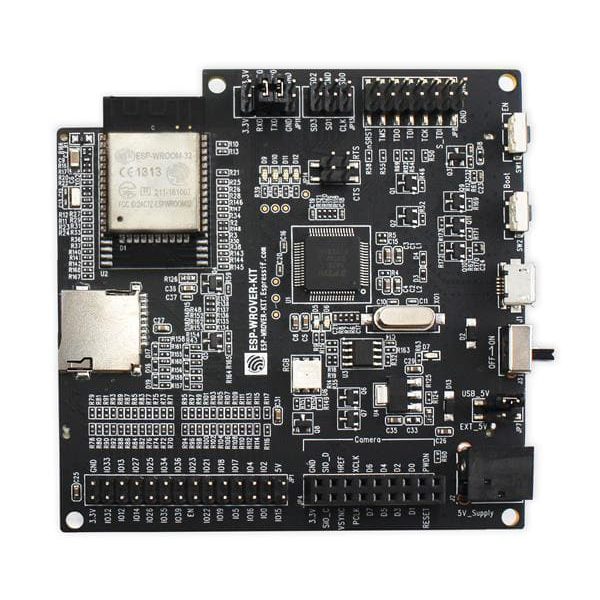
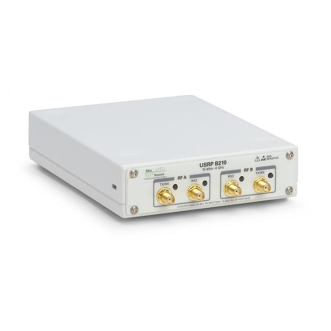

# ⚙️ Interface Drivers and Hardware Support
This sections describes in more detail the driver requirements (software or hardware) and the inner working of each driver, including their available APIs.
WDissector use drivers to communicate with the fuzzing interface. This interface can require a specific hardware or software or a combination of them.
Currently there are drivers for Bluetooth classic and LTE (OpenAirInterface). The current Drivers are listed on the table below.
| Protocol Target | Interface Driver Name | Interface Communication | Hardware Support |
|---|---|---|---|
| Bluetooth Classic BLE Host | ESP32BTDriver | Serial Port over High-Speed USB | 1. ESP-WROVER-KIT-VE (opens new window) |
| LTE / 4G (eNB) | OAICommunication | Shared Memory + Mutex | 1. USRP B210 (opens new window) |
| Wi-Fi 802.11 | WifiRT8812AUDriver | Kernel Netlink (opens new window) | 1. RT8812AU Compatible Wi-Fi Dongle. > Alpha AWUS036AC (opens new window) |
# ESP32BTDriver
# Hardware

The recommended hardware is ESP-WROVER-KIT-VE (opens new window). You can buy this board from several electronics suppliers and online stores such as:
- Mouser (opens new window)
- Digikey (opens new window)
- LCSC (opens new window)
- Adafruit (opens new window)
- AliExpress (opens new window)
# Installing Driver
This driver relies on a custom firmware which must be flashed (installed) on a ESP32 Device. This procedure requires running a script which will automatically download the required tools to flash the custom firmware to ESP32 (via platformio framework). You can run the following on either Windows 10 or Ubuntu 18.04 / 20.04.
Download the ESP32 firmware package as follows:
Via Web Browser (Requires GitLab login): https://gitlab.com/asset-sutd/software/wireless-deep-fuzzer/-/jobs/artifacts/wdissector/raw/release/esp32driver.zip?job=release (opens new window)
Or Via bash command line:
wget --header="PRIVATE-TOKEN: <gitlab token>" \ --content-disposition "https://gitlab.com/api/v4/projects/\ asset-sutd%2Fsoftware%2Fwireless-deep-fuzzer/jobs/artifacts/\ wdissector/raw/release/esp32driver.zip?job=release"
You can upload the firmware to ESP32 on either Windows or Linux. For windows you need to manually install python3 before executing the installation script.
cd release
python firmware.py COM6
sudo apt install unzip python3-dev
unzip esp32bt.zip # Extract esp32bt.zip if you haven't done so
cd release
python3 firmware.py /dev/ttyUSB0 # Please change your serial port to match your device.
// Make sure to add code blocks to your code group
WARNING
You may need to press and hold the boot button during the firmware upload process if you get failures.
# OAICommunication
# Hardware

The LTE fuzzer, which uses OpenAirInterface for the LTE stack, requires use of an SDR. We recommend the use of USRP B210 (opens new window) which can be acquired directly from ETTUS (opens new window). However, OAI also supports other SDRs (opens new window) which we didn't test yet.
# Installing Driver
The custom OAI/Open5GS software which LTE fuzzer requires can be downloaded and built as follows:
# Go to wdissector root folder
cd 3rd-party
git clone https://gitlab.com/asset-sutd/software/oai_lte_network --depth=1
cd oai_lte_network/openair-ran
# Requirements will be installed to the system and build process will start
./build_all.sh
# Build Open5GS
cd ../../open5gs-core
./build.sh
← 🔀 Fuzzers ☁️ Web API →